Mein Karosseriebauer hat mir das im Vertrauen gesagt. Ich habe meine 2.000-Euro-Reparatur abgesagt.
Werkstätten verlangen tausende Euro für Kratzer, die sie in 60 Sekunden reparieren. Hier ist, was einen von ihnen endlich zum Reden gebracht hat.
- Werkstatt-Angebot: 2.000 € für Kratzer an beiden Türen und der Stoßstange.
- Ein Werkstatt-Mitarbeiter verriet mir das Tuch, das die Profis selbst benutzen: NanoPolix.
- Oberflächliche Kratzer, Schrammen, Lackübertragung und Oxidation — behandelt in unter 60 Sekunden.
- Selbst gemacht für 15,73 € statt 2.000 €. Hier ist, wie es gelaufen ist.
Ich stand auf dem Parkplatz der Karosseriewerkstatt Wagner in München und starrte auf die Kratzer, die sich an beiden Türen meines VW Passat entlangzogen, als sich mein Magen umdrehte.
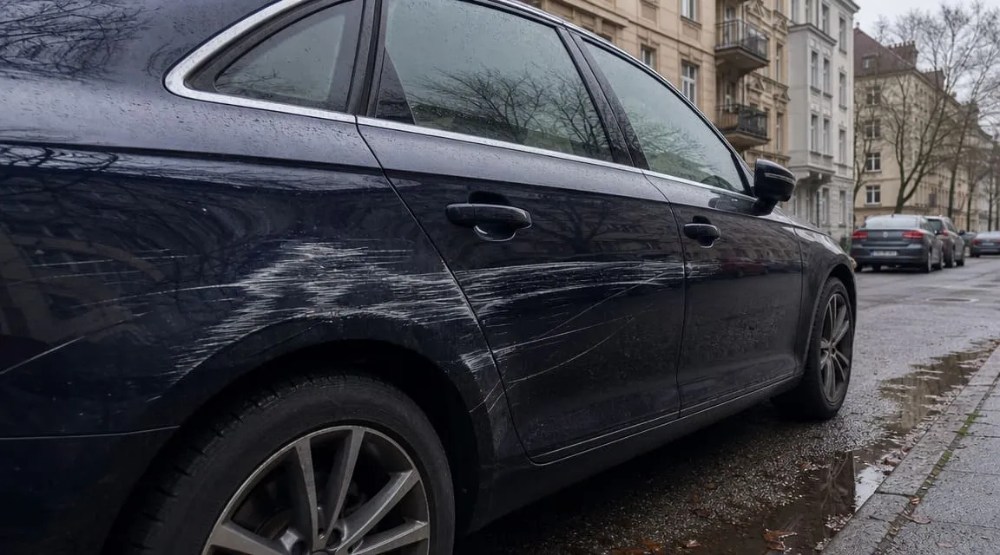
„1.800 für Stoßstange und beide Türen neu lackieren", sagte Herr Wagner, ohne überhaupt von seinem Klemmbrett aufzusehen. „Mit Mehrwertsteuer landen wir bei rund 2.000. Farbabstimmung bei schwarzen Autos ist teuer."
Zweitausend Euro. Für Kratzer, die mir irgendein Idiot auf dem Rewe-Parkplatz reingezogen hat, während ich drinnen einkaufen war.
Ich war drauf und dran wegzugehen — drauf und dran, einfach mit dem Schaden zu leben, weil ich so viel Geld einfach nicht rechtfertigen konnte — als einer von Wagners Gesellen, Klaus, mir aus den Augenwinkeln zuwinkte. Er stand an der Seitentür und machte gerade Raucherpause. Er hatte das ganze Gespräch mitbekommen.
Das Gespräch auf dem Parkplatz
„Hey, Kollege", sagte Klaus leise, als ich an ihm vorbei zu meinem Auto ging. Er schaute kurz zurück zum Büro. „An deiner Stelle würde ich das nicht bezahlen."
Ich blieb stehen.
„Was meinst du damit?"
Er zog etwas aus seinem Werkzeugkasten. Ein graues Tuch, etwa so groß wie ein Spültuch. Es sah völlig unscheinbar aus.
„Das hier benutzen wir, bevor wir den Kunden überhaupt den Preis nennen", sagte er. „Meistens reparieren wir Kratzer wie deine in etwa einer Minute mit diesem Ding und kassieren trotzdem 800 Euro. Der Chef macht damit keine Werbung, weil… na ja, du kannst dir ja denken warum."
Er reichte es mir. Es fühlte sich etwas schwerer an als ein normales Tuch und hatte einen leichten metallischen Schimmer.
„Was ist das?"
„Das nennt sich NanoPolix", sagte Klaus. „Ein Nano-Metall-Tuch. Du reibst es etwa 30 Sekunden über den Kratzer, lässt es kurz einwirken, wischst es weg. Kratzer verschwindet. Ich schwöre dir. Wir arbeiten seit zwei Jahren damit."
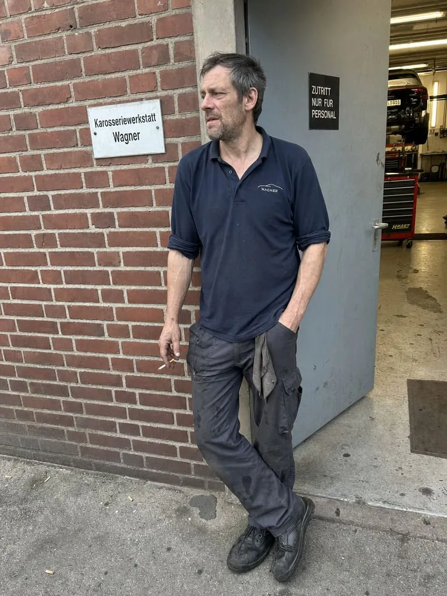
Ich stand einfach nur da, hielt dieses Tuch in der Hand und versuchte zu verstehen, was er mir gerade erzählte.
„Warum erzählst du mir das?", fragte ich.
Klaus zuckte mit den Schultern. „Weil der Chef dir gerade zwei Riesen für etwas berechnet hat, was du selbst für 20 Euro reparieren kannst. Und ehrlich gesagt? Ich hab' es satt, mit anzusehen, wie Leute über den Tisch gezogen werden. Meine Mutter war letzten Monat hier mit Kratzern an ihrem Polo, und ich musste zusehen, wie der Chef ihr 600 Euro berechnet hat, obwohl ich ihr eines von diesen Tüchern hätte mitgeben können."
Er nahm einen tiefen Zug von seiner Zigarette.
„Schau es dir an, wenn du zu Hause bist. Du findest es überall, auf Amazon und auf deren eigener Webseite. Aber sag nichts… dem Chef, ja?"
30-Tage-Geld-zurück-Garantie. Funktioniert es nicht, zahlst du auch nicht.
Was ist NanoPolix?
Als ich zu Hause war, habe ich genau das gemacht, was Klaus mir geraten hatte. Ich habe es nachgeschaut.
Und was ich gefunden habe, hat mich wütend gemacht.
Nicht auf NanoPolix. Auf jede Karosseriewerkstatt, jeden Fahrzeugaufbereiter, jedes Autohaus, das den Leuten hunderte oder tausende Euro für Reparaturen abknöpft, die man mit einem Tuch für 15 Euro selbst machen kann.
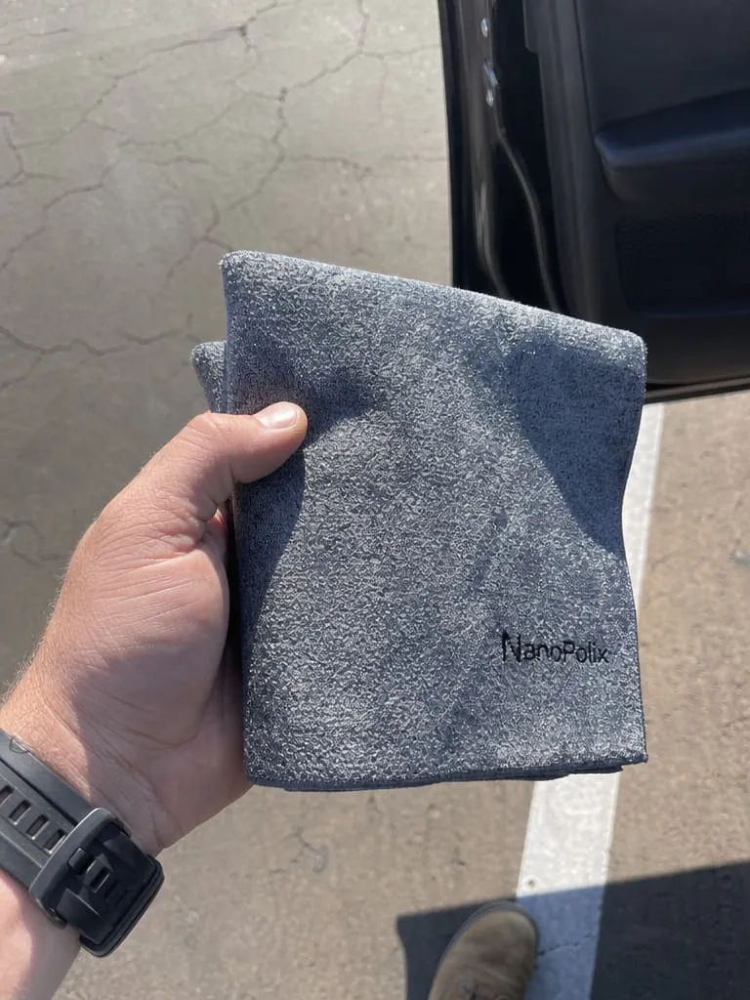
Hier ist, was sie dir nicht erzählen wollen
NanoPolix nutzt eine Nano-Metall-Technologie, die ursprünglich für die Raumfahrt entwickelt wurde.
Nicht für Autos. Für die Raumfahrt.
Dieselbe molekulare Reparaturtechnologie, die die ESA nutzt, um Mikroschäden an Satelliten zu beheben — Schäden, die während des Starts entstehen und sich nicht manuell reparieren lassen, weil der Satellit im Orbit ist — wurde zu einem Tuch weiterentwickelt, das du in deiner Einfahrt benutzen kannst.
Stell dir das einen Moment vor.
Technologie, die entwickelt wurde, um Raumfahrzeuge im Weltraum zu reparieren, ist jetzt verfügbar, um dein Auto für 15 Euro zu reparieren.
Warum du noch nie davon gehört hast
Weil die Karosseriereparatur-Branche allein in Deutschland ein Milliardengeschäft ist.
Sie verlangen 200 bis 2.000 Euro pro Reparatur. Sie sagen dir, es dauert Tage. Sie sagen dir, es braucht spezielle Ausrüstung, professionelle Ausbildung, herstellereigene Lackmischsysteme.
Das ist Unsinn.
Die meisten Lackreparaturen — wahrscheinlich 80% von dem, was Karosseriewerkstätten machen — sind oberflächliche Schäden, die nicht einmal bis zur Grundierung gehen. Kratzer. Schrammen. Oxidation. Lackübertragung. Die Art von Schäden, die man jeden Tag auf Parkplätzen sieht.
Und alle lassen sich in 60 Sekunden mit molekularer Bindungstechnologie reparieren.
Aber wenn die Werkstätten dir das erzählen würden? Wenn die Autohäuser zugeben würden, dass du sie nicht brauchst? Wenn die Versicherungen aufhören würden, 800-Euro-Schecks für Kratzerreparaturen auszustellen?
Milliarden Euro verschwinden.
Also erzählen sie es dir nicht. Sie rechnen weiter ab. Und du zahlst weiter.
Die Wissenschaft, die alles ändert
Ich erkläre dir das jetzt einmal, und wenn du es verstanden hast, wirst du dir klar werden, wie viel Geld du für „professionelle" Reparaturen verschwendet hast.
So funktioniert nano-molekulare Reparatur wirklich:
Aktivierung durch Reibung
Wenn du NanoPolix über beschädigten Lack reibst, aktivierst du mikroskopisch kleine Metallpartikel — wir sprechen von 1/1000 der Breite eines menschlichen Haares. Diese Partikel sind im Tuch auf Nano-Ebene eingebettet. Reibung erweckt sie.
Molekulare Bindung
Hier kommt der Teil, den dir keine Werkstatt erzählt: Aktivierte Nanopartikel liegen nicht einfach wie Wachs oder Politur auf dem Kratzer. Sie verbinden sich chemisch mit deinem bestehenden Lack auf molekularer Ebene. Sie werden TEIL der Lackstruktur. Das ist derselbe Prozess, mit dem Hitzeschilde von Raumfahrzeugen repariert werden.
Selbstaufbau-Rekonstruktion
Während sich die Partikel verbinden, bauen sie die beschädigte Lackstruktur physikalisch von innen nach außen wieder auf. Sie füllen die Kratzerlücke komplett aus und verschmelzen mit dem umliegenden Klarlack. Es ist keine Überdeckung des Schadens — es ist eine UMKEHRUNG auf molekularer Ebene. Deshalb ist die Reparatur dauerhaft.
Schützende Aushärtung
Nach 30 Minuten härtet die Nano-Beschichtung zu einer Schutzschicht aus, die sogar HALTBARER ist als dein ursprünglicher Werkslack. Deshalb ist die reparierte Stelle widerstandsfähiger gegen zukünftige Kratzer als unbehandelter Lack. Du reparierst nicht nur Schäden — du machst deinen Lack haltbarer.
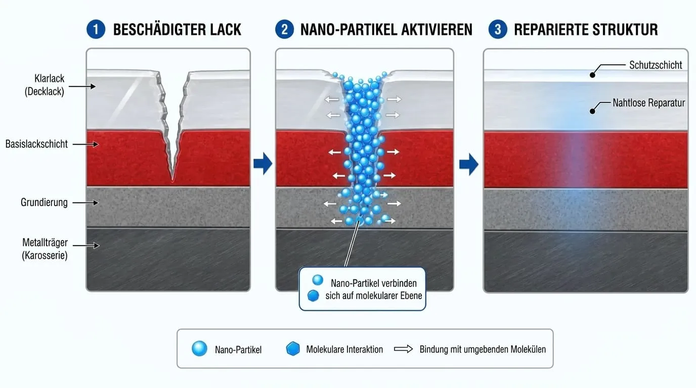
Das ist kein „Produkt". Das ist ein grundlegender Wandel in der Art, wie Lackreparatur funktioniert.
Werkstätten arbeiten seit 50 Jahren mit der gleichen Grundtechnik: Stelle abschleifen, mit Grundierung füllen, neuen Lack auftragen, Kanten anpassen, Klarlack drauf, 24 Stunden aushärten lassen. Es ist zeitaufwändig, arbeitsintensiv, teuer.
NanoPolix überspringt all das. Die Nanopartikel machen in 60 Sekunden, was eine Werkstatt in 3 Stunden macht.
Und weil die Partikel farblos sind und sich auf molekularer Ebene verbinden, funktionieren sie auf JEDER Lackfarbe. Schwarz, Weiß, Rot, Metallic, Matt, Perlmutt — egal. Die Technologie passt sich dem Untergrund an.
Woher diese Technologie kommt (und warum das wichtig ist)
Das ist nicht irgendein Typ, der in seiner Garage Chemikalien mischt.
Der Gründer von NanoPolix entdeckte diese Nano-Polymer-Verbindung auf einer Raumfahrt-Konferenz in München. Ingenieure aus einem deutschen Forschungslabor zeigten dort eine selbstheilende Beschichtung, die für Raketennutzlasten entwickelt wurde — die Schutzhüllen, die Satelliten beim Start umgeben.
Das Problem, das sie lösten: Mikroschäden durch Trümmer beim Start können die Satellitenleistung im Orbit beeinträchtigen. Und du kannst nicht einfach eine Reparaturmannschaft zu einem Satelliten schicken, der 200 Kilometer über der Erde schwebt.
Also entwickelten sie eine Beschichtung, die sich durch molekulare Umstrukturierung selbst reparieren konnte. Wenn ein Schaden auftritt, aktivieren sich die Nanopartikel der Beschichtung und bauen den beschädigten Bereich automatisch wieder auf.
Selbstheilende Raumfahrttechnologie.
Der Gründer von NanoPolix sah diese Vorführung und hatte einen Gedanken: „Wenn das eine Rakete im Weltall reparieren kann, was kann es dann für eine Autotür auf einem Parkplatz tun?"
Es dauerte zwei Jahre Arbeit mit einem Nanotechnologie-Labor einer Universität, um die Raumfahrtformel so anzupassen, dass sie in Stoff eingebettet und durch einfache Reibung aktiviert werden kann — ohne spezielle Ausrüstung.
Das Ergebnis ist, was du gerade siehst. Derselbe molekulare Reparaturprozess, der millionenschwere Raumfahrzeuge schützt, jetzt in einem Tuch verfügbar, das weniger kostet als eine Tankfüllung.
Das ist keine Übertreibung. Das ist kein Marketing-Geschwätz. Das ist genau das, was es ist.
Und die Tatsache, dass die meisten Leute noch nie davon gehört haben? Das sagt dir alles, was du wissen musst, darüber, wie hart die Karosseriereparatur-Branche daran arbeitet, diese Technologie unter Verschluss zu halten.
Die Rechnung, die mich überzeugt hat
Ich habe ein Tuch bestellt. Es war in drei Tagen da.
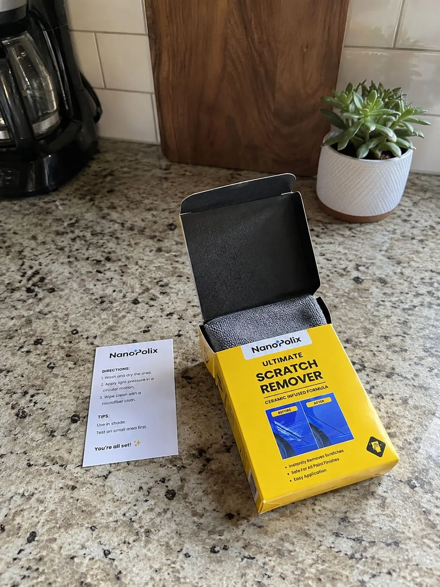
Ich habe es an meinem Auto ausprobiert
Ich lüge nicht — ich war skeptisch. Es klang zu schön, um wahr zu sein. Ein Tuch für 15 Euro, das macht, was eine Werkstattreparatur für 2.000 Euro macht? Ach komm.
Aber ich dachte: Im schlimmsten Fall bin ich 15 Euro los und habe immer noch die Kratzer.
Die Anleitung war einfach:
- Den verkratzten Bereich säubern (ich habe ein feuchtes Küchentuch genommen)
- Das Tuch in kleinen kreisenden Bewegungen 30 bis 60 Sekunden über den Kratzer reiben
- 30 Minuten einwirken lassen
- Mit Wasser zurückkommen und sauber abwischen
Ich habe mit dem schlimmsten Kratzer angefangen — ein tiefer Kratzer, der sich an der Beifahrertür entlangzog, von dem ich sicher war, dass er nicht rausgehen würde.
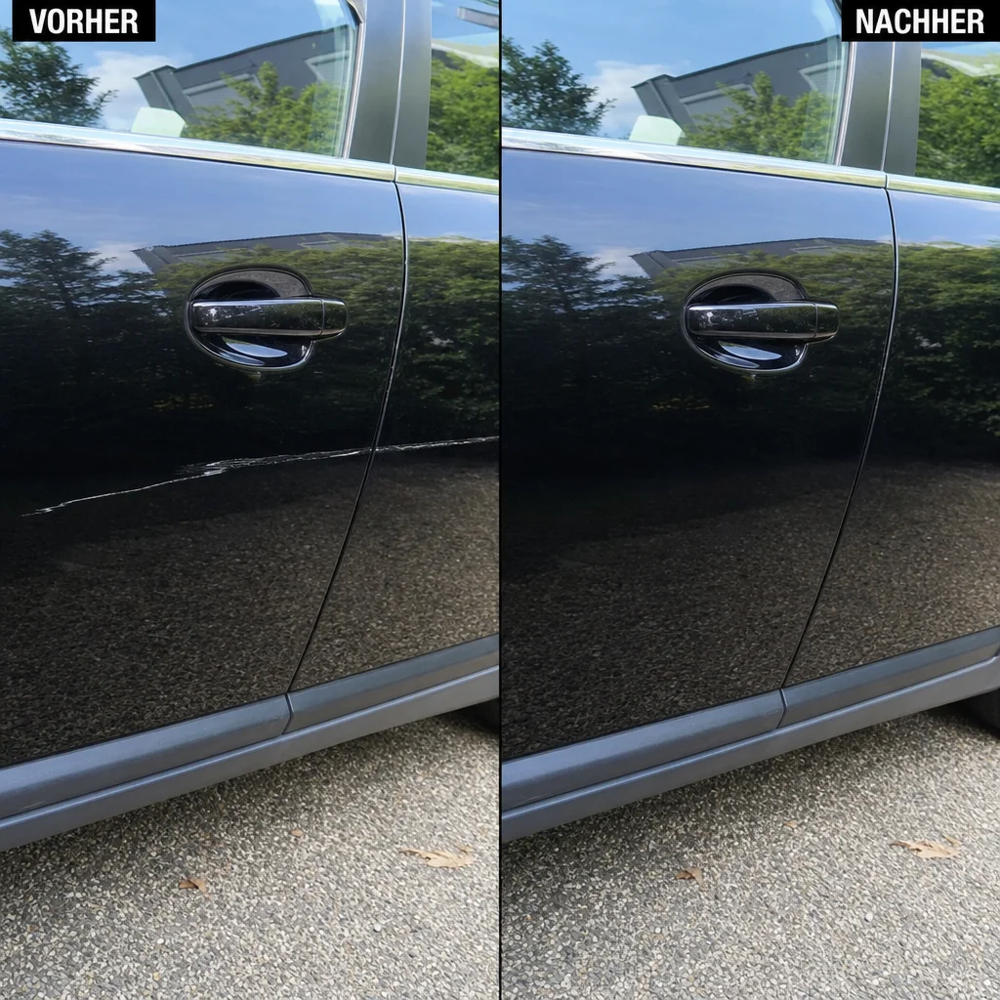
Ich habe das Tuch darüber gerieben. Es fühlte sich leicht rau an, wie sehr feines Schleifpapier, aber nicht abrasiv. Nach etwa 45 Sekunden konnte ich schon sehen, wie der Kratzer schwächer wurde. Ich machte noch 15 Sekunden weiter und hörte dann auf.
Ich habe einen Timer auf 30 Minuten gestellt und bin reingegangen.
Als ich mit einem feuchten Mikrofasertuch zurückkam, habe ich die Stelle sauber gewischt.
Der Kratzer war weg.
Nicht „weniger sichtbar". Nicht „besser, aber noch da".
Weg.
Ich stand gute zwei Minuten lang da und fuhr mit der Hand über die Stelle, wo der Kratzer gewesen war. Der Lack war glatt. Die Spiegelung war perfekt. Hätte ich nicht vorher ein Foto vom Kratzer gemacht, ich hätte dir nicht sagen können, wo er war.
Das Tuch im Einsatz: 30 Sekunden in kreisenden Bewegungen — und der Kratzer verschwindet.
Dann habe ich es an allem anderen ausprobiert
Nachdem ich gesehen hatte, wie der erste Kratzer verschwand, bin ich um mein ganzes Auto rumgegangen und habe jede Macke gesucht, die ich finden konnte.
Die Kratzer am Türgriff: Du kennst diese kreisrunden Kratzspuren um jeden Türgriff, die deine Schlüssel im Lack hinterlassen? Die hatte ich seit drei Jahren. Dreißig Sekunden mit dem Tuch, weg waren sie.
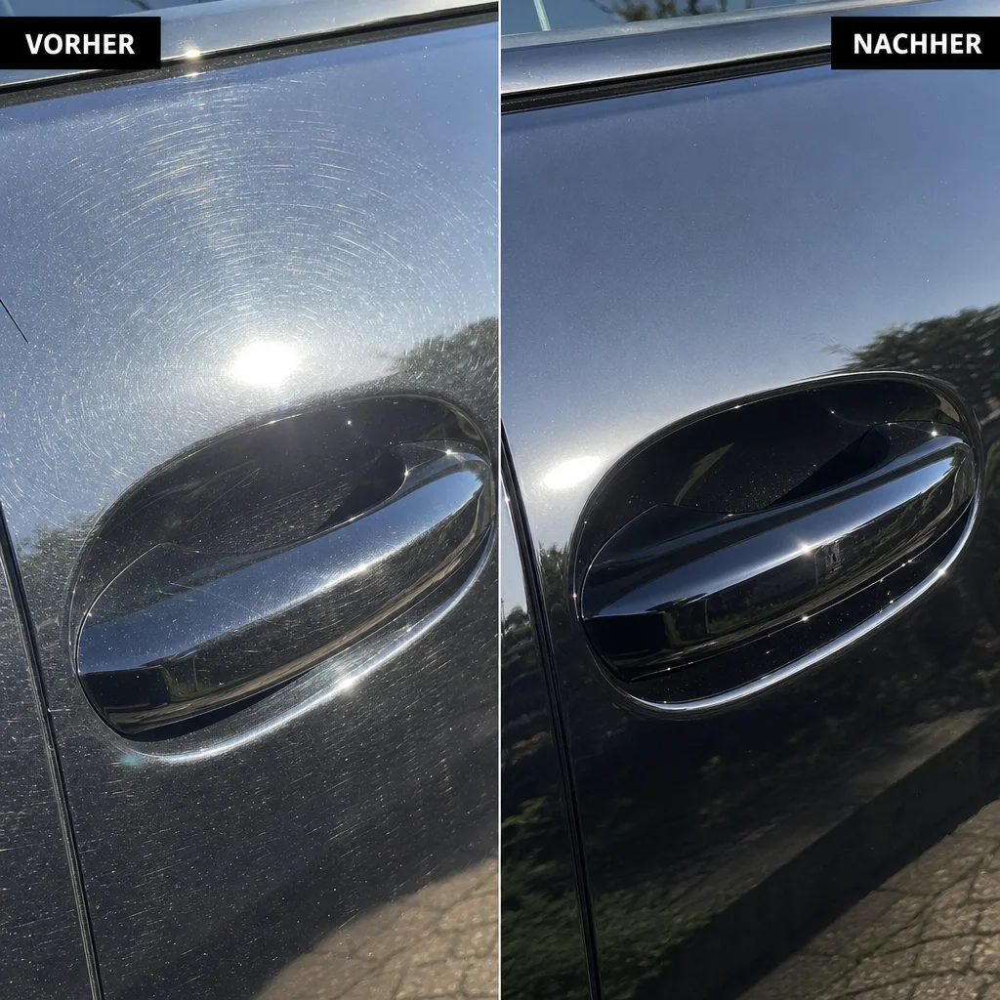
Die weiße Lackübertragung an meiner Stoßstange: Letzten Monat hat sich in einer Tiefgarage das weiße Auto von jemand anderem an meinem entlang geschrammt. Hinterließ einen hässlichen weißen Streifen über meiner schwarzen Stoßstange. Ich dachte, der wäre für immer da. Falsch — ging direkt weg.
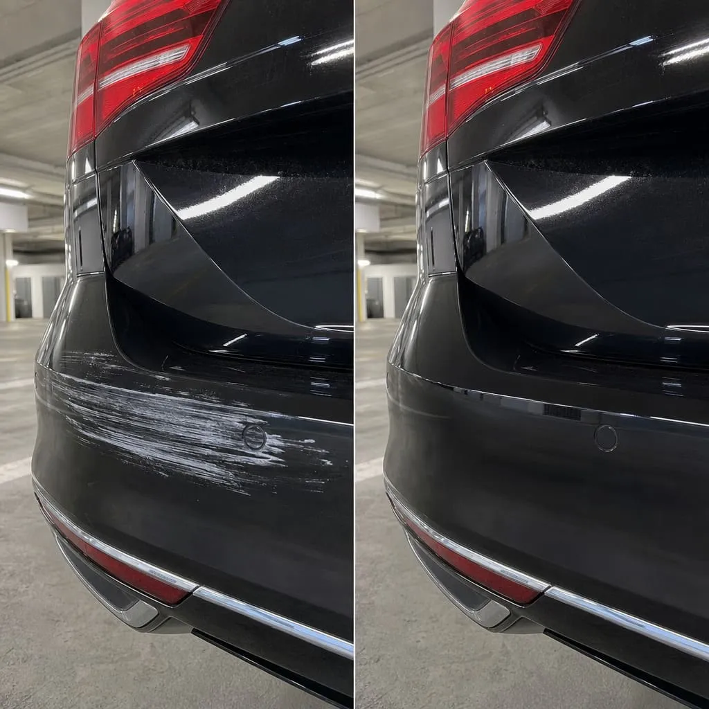
Die Oxidation auf der Motorhaube: Mein Auto steht draußen in der bayerischen Sonne. Die Motorhaube hatte angefangen, diesen kreidigen, ausgeblichenen Look zu entwickeln, den schwarze Autos kriegen. Ich hätte nicht gedacht, dass NanoPolix da rangeht, aber ich habe es trotzdem versucht. Der tiefe Glanz war wieder da. Sah aus, als hätte ich gerade gewachst.
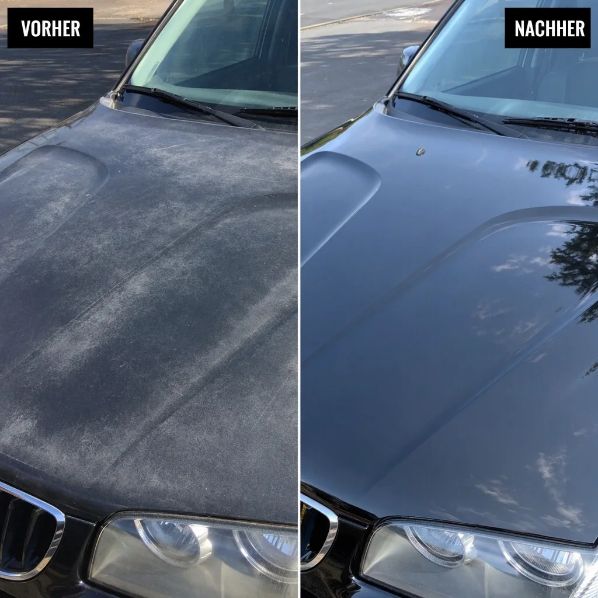
Die ganze Aktion hat vielleicht 90 Minuten insgesamt gedauert, und das meiste davon war Warten zwischen den Anwendungen.
Warum erzählen dir Werkstätten das nicht?
Die Antwort ist doch offensichtlich, oder?
Hätte Wagner mir von NanoPolix erzählt, hätte er 0 Euro verdient statt 2.000. Und er führt ein Geschäft. Ich bin ihm nicht mal böse — ich verstehe das. So funktioniert die Branche.
Aber hier ist das, was Klaus mir später erklärt hat (ich bin zurückgegangen, um mich zu bedanken, und ja, ich habe ihm einen Kasten Augustiner mitgebracht):
Werkstätten haben gewaltige Fixkosten. Diese Schleifmaschine in der Ecke? 19.000 Euro. Der Lackmischtisch? Weitere 35.000. Dann Miete, Versicherung, Personal, alles drum und dran. Wenn du mit Kratzern reinkommst, müssen sie genug abrechnen, um den Laden am Laufen zu halten — auch wenn die eigentliche Reparatur 60 Sekunden dauert.
NanoPolix schafft das alles ab. Es bist nur du, dein Auto und ein Tuch.
Versand am selben Tag. 30-Tage-Garantie. Kein Risiko.
Was kann es eigentlich entfernen?
Nachdem ich mein Auto repariert hatte, wurde ich neugierig. Ich habe angefangen, es bei jeder Art von Kratzer auszuprobieren, die ich finden konnte:
Schlüsselkratzer — Komplett weg. Das sind normalerweise die tiefsten Kratzer, die Leute bekommen, und NanoPolix hat sie in unter einer Minute geschafft.
Parkplatz-Schrammen — Die weiße Lackübertragung von jemandem, dessen Stoßstange an deiner entlang geschrammt ist? Weg in 30 Sekunden.
Türgriff-Kratzer — Du kennst diese kreisförmigen Kratzer um Türgriffe von Schlüsseln oder Ringen? Ich hatte sie an allen vier Türen. Nicht mehr.
Einkaufswagen-Dellen — Die leichten Schrammen, die du bekommst, wenn ein Wagen auf dem Parkplatz gegen dein Auto stößt. Weggewischt.
Oxidation und Verblassen — Meine Motorhaube hatte Sonnenschäden, durch die der schwarze Lack kreidig aussah. NanoPolix hat den tiefen Glanz zurückgebracht.
Das Einzige, was es nicht repariert? Beulen. Wenn das Blech physisch verformt ist, brauchst du immer noch eine Werkstatt. Aber wenn es oberflächlicher Lackschaden ist? Damit kommt NanoPolix klar.
Echte Kundenergebnisse
Sobald ich angefangen habe, über NanoPolix zu sprechen, haben mir Leute ihre Vorher-Nachher-Fotos geschickt. Hier ist, was echte Kunden bekommen:
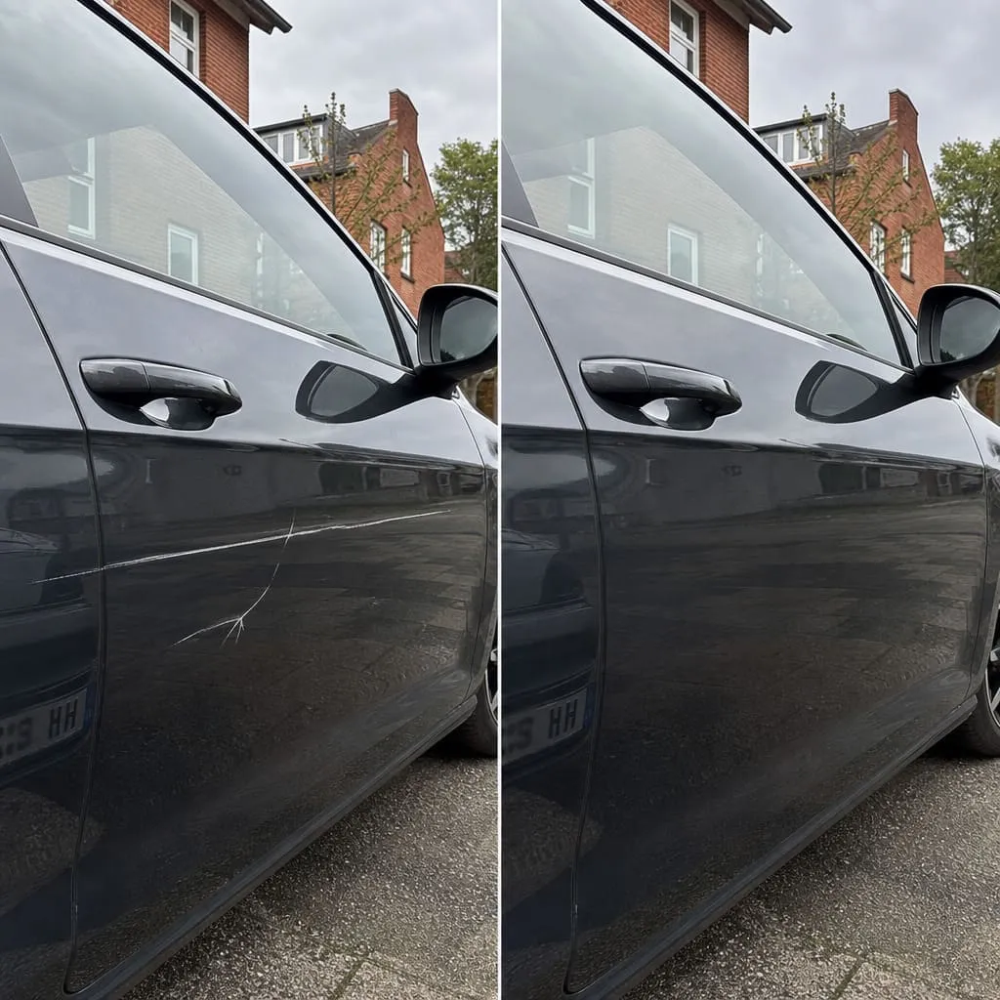
Thomas K. • Hamburg
„Tiefer Schlüsselkratzer durch Parkplatz-Vandalismus — komplett weg"
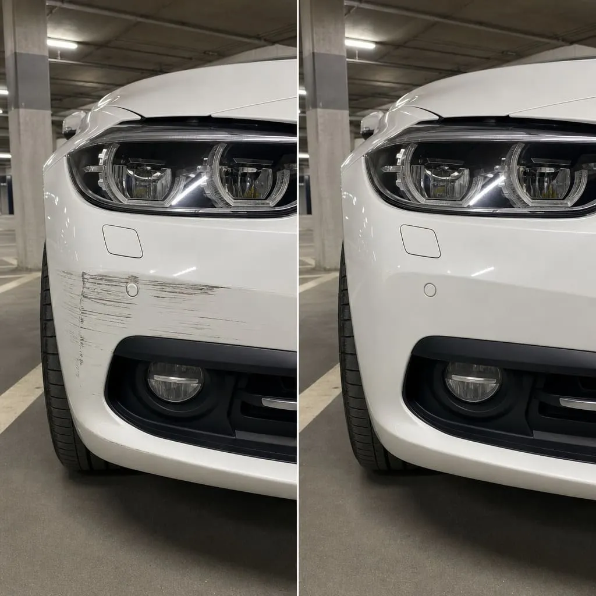
Sabine M. • Stuttgart
„Vordere Stoßstangen-Schramme aus der Tiefgarage — habe mir 800 € Werkstatt gespart"
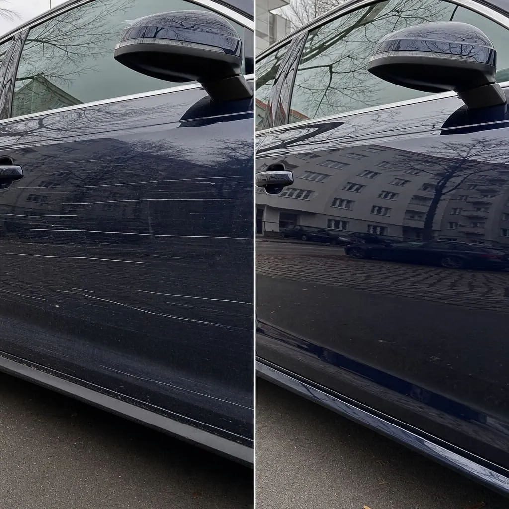
Andreas P. • Berlin
„5+ Jahre Türkratzer — alle an einem Nachmittag weg"
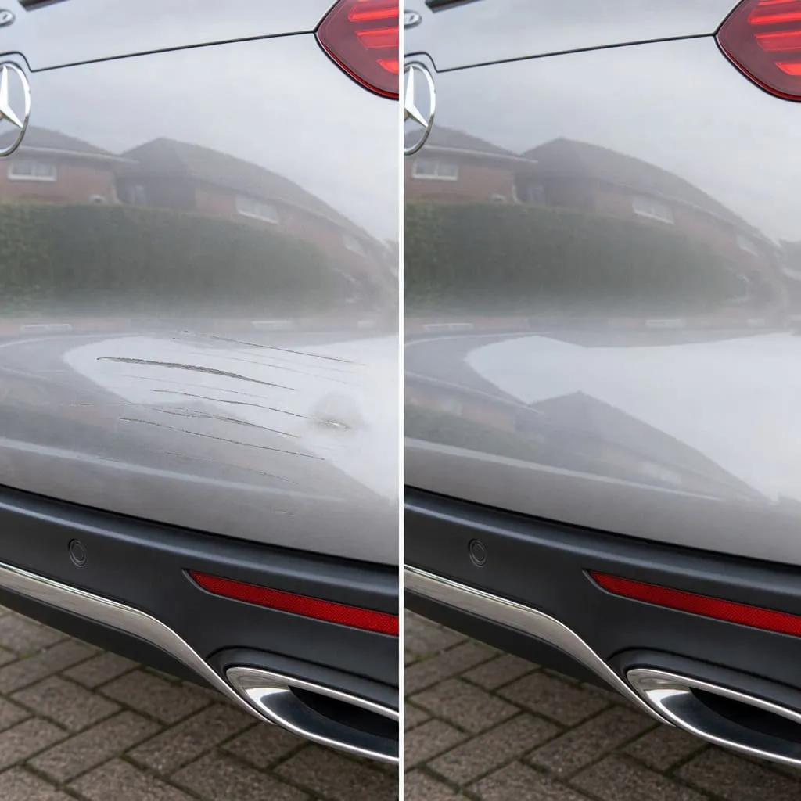
Julia W. • Köln
„Kofferraum-Kratzer vom Gepäckbeladen — Autohaus wollte 450 €"
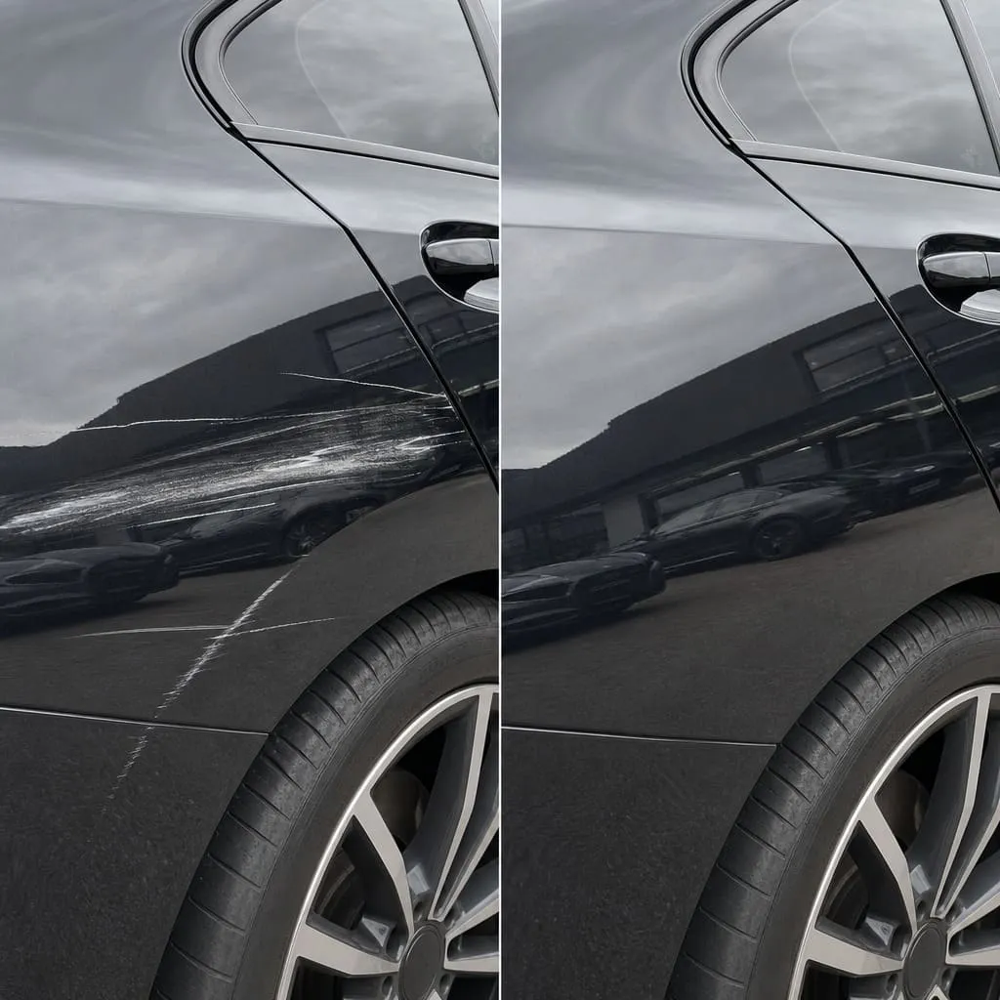
Robert H. • Frankfurt
„Seitenwand-Schramme vom engen Parken — Leasing-Rückgabe ohne Beanstandung"
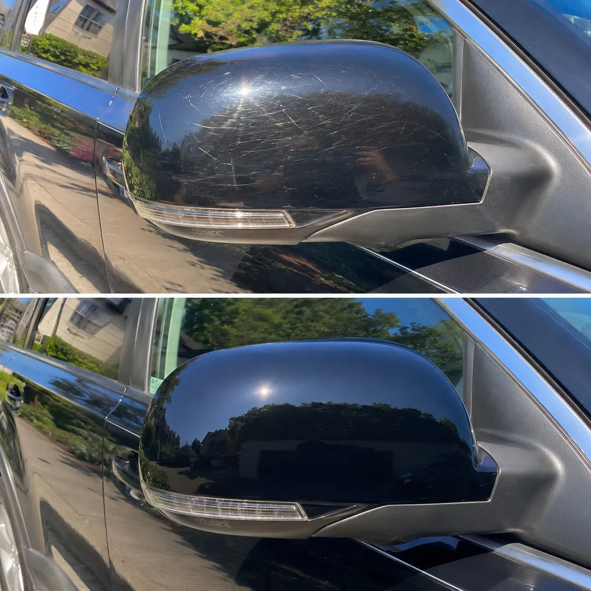
Petra M. • Düsseldorf
„Spiegelgehäuse-Kratzer aus der Waschstraße — sah aus wie ein Neuwagen"
Jedem Einzelnen von denen wurden zwischen 300 und 2.000 Euro für professionelle Reparaturen angeboten. Sie haben es alle selbst für 15,73 Euro gemacht.
Wer benutzt das?
Als ich angefangen habe, mit Leuten über NanoPolix zu sprechen, ist mir klar geworden, wie viele Profis das längst kennen:
Autohäuser — Sie benutzen es bei Inzahlungnahmen, bevor sie die Autos auf den Hof stellen. Ein Auto mit sichtbaren Kratzern wird 800 bis 1.200 Euro weniger verkauft als das gleiche Auto in Top-Zustand. Händler haben das schnell rausgekriegt.
Aufbereiter — Professionelle Fahrzeugaufbereiter haben NanoPolix im Sortiment. Sie nehmen 150 Euro fürs „Auspolieren von Kratzern" und benutzen dann ein 15-Euro-Tuch, das sie zwei Minuten kostet.
Leasingnehmer — Wenn du ein geleastes Auto zurückgibst, weißt du, wie teuer Abnutzungsstrafen sind. Leute nutzen NanoPolix, um 400 bis 800 Euro an Leasing-Rückgabekosten zu vermeiden.
Auto-Wiederverkäufer — Jeder, der Autos kauft und weiterverkauft, nutzt das. Lack aufpolieren, Wert steigern, Differenz einstecken.
Im Grunde genommen: Wenn du beruflich mit Autos zu tun hast, kennst du NanoPolix wahrscheinlich schon. Es sind alle anderen — normale Autobesitzer wie ich —, die im Dunkeln gelassen werden.
Echte Kundenbewertungen
Lohnt es sich wirklich?
Hier ist meine ehrliche Einschätzung:
Wenn du einen einzigen Kratzer hast, der dich in der Werkstatt 150+ Euro kosten würde? Ja, 100% lohnenswert.
Wenn du gerade ein Leasingfahrzeug zurückgibst und Angst vor Schadenersatzkosten hast? Absolut lohnenswert.
Wenn du dein Auto verkaufst und Kratzer den Wert drücken? Doppelt lohnenswert.
Wenn du einfach jemand bist, der will, dass sein Auto gut aussieht, und du es satthast, mit sichtbaren Schäden zu leben? Lohnt sich.
Das Tuch kostet mit dem aktuellen Rabatt 15,73 Euro (normalerweise 45 Euro), und es ist wiederverwendbar. Du kannst 10 bis 15 Kratzer mit einem Tuch reparieren, bevor die Nano-Beschichtung verbraucht ist.
Die Werkstatt wollte mir 2.000 Euro für etwas berechnen, was ich in unter einer Stunde gemacht habe. Das ist keine Übertreibung — das ist buchstäblich, was passiert ist.
Häufige Fragen
Funktioniert es wirklich auf schwarzem und dunklem Metallic-Lack?
Für welche Kratzertiefe ist es geeignet?
Wie wende ich es richtig an?
Funktioniert es auch auf Matt-Lack oder Folierung?
Wie oft kann ich das Tuch verwenden?
Und wenn ich nicht zufrieden bin?
⚡ Schnell ausverkauft. Aktueller Bestand verfügbar Stand 19. Mai 2026.
30-Tage-Geld-zurück-Garantie. Funktioniert es nicht, zahlst du nicht.
Mein weißer Skoda hatte über der ganzen Motorhaube eine kreidige Oxidation entwickelt, und ich dachte schon, das Auto wird einfach alt. Aber mein Bruder hat mir NanoPolix empfohlen, und das hat es in etwa zwanzig Minuten beseitigt. Die Motorhaube ist wieder strahlend weiß und fast spiegelnd.
Funktioniert wie Magie. Ich kann es mir nicht erklären, aber es kriegt wirklich Kratzer und Macken aller Art weg!!!!!!
Ich kann es nur empfehlen. Ein einziges Tuch hat 3 Kratzer am Türgriff weggemacht, und die Oberfläche sieht immer noch perfekt aus. Hat mir richtig Geld gespart 👏
Dieser Artikel ist ganz klar eine Werbung. Wollte ich nur sagen, bevor irgendjemand danach kauft.
Ja klar, ist eine Werbung. Aber das Tuch funktioniert bei mir, also was soll ich dir sagen 🤷
Jeden Cent wert!!! Mein Auto ist wieder ganz blank und schön
Ich besuche regelmäßig Oldtimertreffen und suche immer nach der besten Möglichkeit, mein Auto zwischen den Treffen aufzubereiten, ohne eine Menge Geld für Pflegemittel auszugeben. Habe angefangen, NanoPolix für punktuelle Ausbesserungen zu benutzen, und ehrlich gesagt ist es ein fester Bestandteil meiner Vorbereitung geworden. Kriegt auch die feinen Sachen, an die selbst Reinigungsknete nicht rankommt, geht schnell, und das Finish danach ist wirklich beeindruckend.
Streusalz hinterlässt schreckliche weiße Chemikalienflecken an den unteren Seitenteilen, die normales Waschen nie ganz rauskriegt. Aber NanoPolix hat Flecken weggemacht, die seit zwei Wintern dranhingen — ohne Probleme!